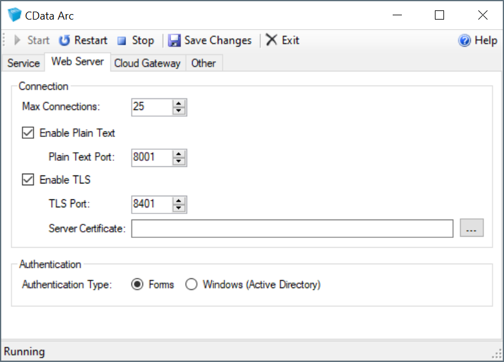
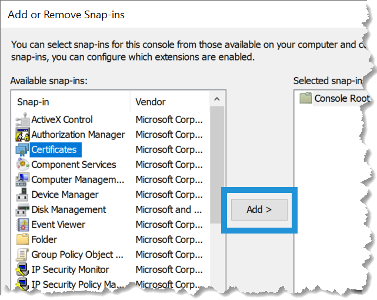
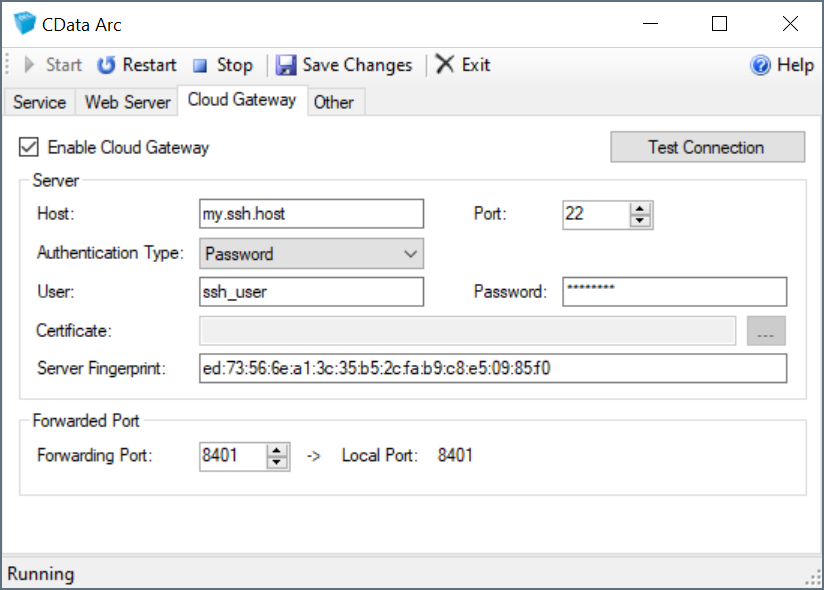
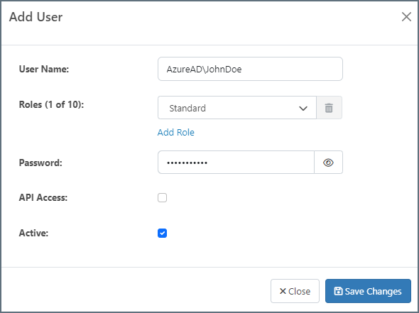
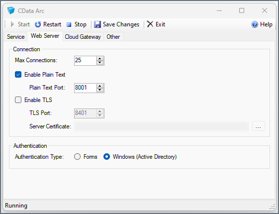
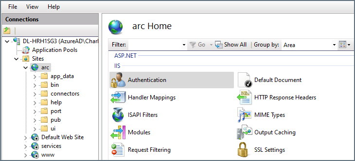
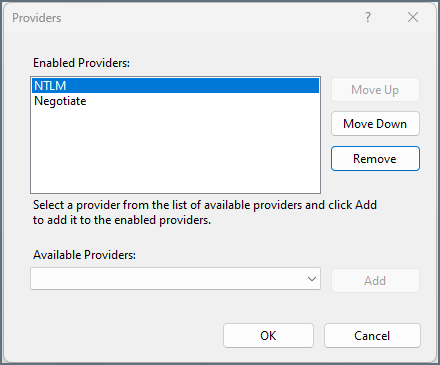

.NET Edition
Version 26.1.9509
Version 26.1.9509
- Using the Embedded Server
- Using IIS
- Managing Users
- Configuring the Application Directory
- Configuring the Application Database
- Setting Login Lockouts
.NET Edition
The .NET edition of CData Arc includes a stand-alone embedded web server and can also be hosted in IIS. This topic describes various options for hosting the application in Windows.
If you do not have experience with IIS, CData recommends you use the embedded server. The embedded server is automatically deployed at installation and provides a simple interface for server-level administration tasks such as configuring logging, running the application as a service, and enabling TLS/SSL.
Using the Embedded Server
This section shows how to configure the stand-alone, embedded Web server, including how to host SSL/TLS connections and configure the Cloud Gateway, a reverse SSH tunnel.
When hosted on the embedded server, the application can be run as a Windows service:
- Right-click the CData Arc icon in the taskbar and click Server Options.
- Select Run as a Windows Service.
- Save your changes.
Host TLS/SSL Connections (Embedded Server)
You can require TLS as well as offer services in plain text. This section shows how to host TLS/SSL connections in the embedded server included with the Windows edition of the application. To deploy TLS/SSL for the Java edition, refer to the documentation for the Java servlet you are using to host the application.
- Right-click the icon for the application in the Windows system tray and click Server Options.
- On the Web Server tab, select Enable TLS and select a port that you want to listen on for TLS connections.
- Click the button next to the TLS Server Certificate box to select a private key certificate. The certificate with private key must be installed to the Local Computer certificate store. If there are no certificates available that match that criteria, click Create New Certificate to create a simple certificate for this purpose.

The server restarts and begins serving TLS requests after you save your changes.
Manage Personal Certificates
The certificates available in the certificate selection dialog are located in the Personal certificate store for the local computer. To add a certificate to the Windows store:
- Type mmc from the Run menu to launch Microsoft Management Console.
- Click File > Add/Remove Snap-In.
-
Select Certificates from the Available snap-ins table and click Add.

- Select Computer Account > Local Computer.
- After adding the snap-in, click Certificates (Local Computer) > Personal > Certificates to display the available certificates. The certificates for which a private key is available have a key icon superimposed over the certificate icon.
- To import a certificate from the local disk into this store, click Action > All Tasks > Import. After completing the import wizard, the certificates are available in the application certificate selection dialog.
Cloud Gateway
The Cloud Gateway provides a simple way to expose the application to the internet without the need for firewall changes. As long as a publicly accessible SSH server is available, Arc can be accessed via a port on the publicly accessible SSH server by leveraging an SSH reverse tunnel.
To leverage this functionality, right-click the application icon in the system tray and select Server Options. Navigate to the Cloud Gateway tab, as shown below, and enter the following information:

- Host The SSH server that Arc connects to.
- Port The port on which the SSH host is listening for connections. Most SSH servers listen on port 22, which is the default value.
- Authentication Type The type of authentication to use. Arc supports Password, Public Key, Multi-Factor, and Keyboard Interactive.
- User The username Arc uses to authenticate to the SSH server.
- Password The password used to authenticate, if required by the selected Authentication Type.
- Certificate The certificate Arc uses to authenticate to the SSH server when using Public Key authentication.
- Server Fingerprint The SSH host key fingerprint of the SSH server. This value is read-only and purely informational.
- Forwarding Port The port that the publicly available SSH server listens on for connections to forward to Arc.
In addition, you might need to change the configuration of your SSH Server to allow port forwarding. Default SSH server configuration might not always enable port forwarding to non-localhost addresses. For example, if you are connecting to an OpenSSH server, the GatewayPorts property must be set to yes or clientspecified in the SSH server configuration file.
After you enter this information, click Test Connection to test the connection to the SSH server to verify the supplied information. If successful, once the application is restarted, Arc is accessible via the Forwarding Port on the SSH host. For example, if you specify the SSH server my.ssh.host with a Forwarding Port of 8401, entering https://my.ssh.host:8401 in a browser causes the communication to be forwarded to the local machine where Arc is running, allowing public access even though it is not directly accessible.
Windows Authentication
By default, the embedded web server uses ASP.NET’s forms-based authentication, which requires that a username/password combination be entered into a webform (a login portal) to grant access to the administration console. Arc also supports Windows Authentication to grant application access to specific Windows users or security groups.
Before enabling Windows Authentication on the embedded web server, you should add all Users who need access to Arc to the Arc application. All Windows AD Arc user names must use the following syntax: DOMAIN\Username. The syntax is shown in the following image.

Note: You must add users individually, because an entire group cannot be granted access to the application.
Next, to enable Windows Authentication, open the embedded web server configuration UI (right-click the Arc icon in the system tray and select Server Options), then toggle the Authentication Type field under the Web Server tab. Click Save Changes. This restarts the web server and the application.

From then on, when Windows AD users who have been added to Arc log onto their machines and navigate to Arc in the browser, they are automatically logged in.
Using IIS
Arc supports IIS 10, and the System Requirements specify that your machine must be running Windows 10 or Windows Server 2016 or higher. If you run into difficulties setting up IIS, see the Troubleshooting IIS section. If you still have questions, contact our support team for further assistance.
Create a New Web Application
Note: This example uses the default website.
To host the application on your website:
- In the IIS Manager, expand the node for your server in the Connections panel.
- Expand the Sites node, right-click your website, and click Add Application.
- In the Add Application dialog that is displayed, enter the following information:
- Alias The name for the application. For example, “arc”.
- Application Pool The application pool associated with the application. This example uses “DefaultAppPool”.
- Physical Path The path to the www directory, in the directory where the application is installed. The default location is C:\Program Files\CData\CData Arc\www.
Configure Directory Permissions
The application must have full access to the Arc application directory for full functionality.
In ArcESB 2021 and earlier, the application directory and the installation directory were the same: C:\Program Files\ArcESB\ by default. If you upgraded from a previous version of Arc to Arc 2026, this is likely still your application directory.
In Arc 2021, the application directory was split from the install directory. The installation directory is now C:\Program Files\CData\CData Arc. The application directory is now C:\ProgramData\CData\Arc\.
The application directory contains the following folders:
- connectors
- data
- db
- locks
- logs
- schemas
- workspaces
The install directory contains:
- Program executables (CData.Arc.exe and arc.exe) and configuration files
- the www folder and subfolders
- the www_services folder and subfolders
To set permissions, locate the application directory for your Arc installation and follow these steps:
- Right-click the folder and click Properties. On the Security tab, click Edit > Add.
- In the Enter the object names to select box, enter the following, substituting the name of the application pool:
IIS AppPool\[your-application-pool]. For example,IIS AppPool\DefaultAppPool. -
Ensure that the application pool has the following permissions:
- Read
- Write
- Modify
- Read & Execute
- List Folder Contents
Note: You can also use the command line to allow access to the application pool. For example:
icacls "<application directory>" /grant "IIS APPPOOL\DefaultAppPool":(OI)(M)
Configure Server Permissions
If you are using sftpserver or ftpserver, you must ensure that the application pool has the correct permissions set to the root directory that you have configured for the server. If you created the root directory as a child of the application directory path, setting permissions on the parent application directory and its subfolders should be sufficient.
Prevent Application Processes from Unloading
IIS can shut down a web application for several reasons, including when an idle timeout is exceeded, or when it deems the application pool’s resource usage is too high. This might prevent background tasks from running in your application. Ensure that the application stays running by modifying the following settings:
-
Enable the optional Application Initialization feature.
In Windows Server 2016, open Server Manager and click Dashboard > Quick Start > Add Roles and Features. The Add Roles and Features wizard opens. In the Server Roles step, click Web Server (IIS) > Web Server > Application Development > Application Initialization.
In Windows 10, open the Control Panel and click Programs and Features > Turn Windows Features On or Off. Click Internet Information Services > World Wide Web Services > Application Development Features > Application Initialization.
-
In the IIS Manager, click Application Pools in the Connections panel.
-
In the workspace, right-click the application pool and click Advanced Settings.
-
In the General settings, set Start Mode to AlwaysRunning.
-
In the Process Model settings, set Idle Timeout to 0.
-
In the CPU section, set LimitInterval to 0.
-
In the Recycling section, set Regular Time Interval to 0.
-
In the Generate Recycle Event Log Entry node, under the Recycling section, set Regular Time Interval to False. Click the OK button.
-
Back in IIS Manager, right-click on your website and click Manage Website > Advanced Settings.
-
In the General settings, set Preload Enabled to True, then click OK. This ensures that the application starts up immediately after a recycle.
Configure ASP.NET App Pool Recycling
IIS recycles regularly so that it can clean up the ASP.NET app pool processes. You can schedule recycling during off-peak hours instead by navigating to the Recycling section, setting Specific Time to True, and entering the times to recycle in the format hh:mm:ss.
Preloading Applications
IIS’s preloading feature improves performance by allowing the application to run prior to a user connecting. To enable this feature, right-click the web application associated with Arc in the Connections pane and select Manage Application > Advanced Settings. In the PreloadEnabled menu, select True.
When PreloadEnabled is set to True, IIS simulates a user request to the default page of the website or virtual directory so that the application initializes.
Confirm Settings
To open the application, navigate to http://localhost/arc. If you get any errors, see Troubleshooting IIS.
Host TLS/SSL Connections (IIS)
You can use TLS/SSL to protect the confidentiality of your business-critical and mission-critical communications with trading partners. The following steps assume you already have a certificate you can use to enable TLS/SSL on your server.
- In IIS Manager, click your website’s node from the Connections pane.
- Click Bindings on the Actions pane.
- Click Add and select HTTPS.
- Choose the server certificate.
- If you want to require TLS/SSL, double-click the SSL/TLS Settings icon in the workspace with your website’s node still selected. Select Require SSL/TLS and click Apply in the Actions pane.
Windows Authentication
Configuring Arc to use Windows Authentication when Arc is hosted in IIS is similar to the configuration required to use the .NET embedded web server. However, instead of making changes inside the embedded web server, you make the necessary changes inside IIS.
To set up Windows Authentication when Arc is hosted in IIS, follow these steps:
- Log into Arc and add all Windows AD Users who need access to Arc to the application. Windows AD Arc user names must use the following syntax: DOMAIN\Username.
Note: You must add users individually, because an entire group cannot be granted access to the application. - Open IIS to stop the site that is configured for Arc. Right-click on the site and select Manage Website > Stop.
- Click the Arc site to open the Home page. Select Authentication under the IIS section.

A screen appears listing a set of authentication methods. Right-click Forms Authentication and select Disable. This turns off the default authentication method that requires logging in with a username and password. - Right-click Windows Authentication and select Enable.
- Restart your site in IIS.
Note: You might need to edit your Windows Authentication providers in IIS so IIS no longer prompts you for a username and password when accessing Arc. To do this from the IIS authentication settings, right-click Windows Authentication and select Providers. A list of providers opens:

Ensure that NTLM is at the top of the list so that provider has priority when Arc is authenticating. You might need to completely remove Negotiate to stop the username and password requests.
Once Windows Authentication has been correctly configured in IIS, when you access the application you are automatically logged into Arc as the logged in Windows AD user.
Troubleshooting IIS
The sections below provide resolutions for several common errors.
The application stops responding some time after I log out
IIS might be unloading your application after it times out from inactivity. By default, IIS terminates the worker process assigned to the application after 20 minutes of inactivity. See Prevent Application Processes from Unloading to learn how to override this feature.
Visiting http://localhost/application results in a “Page Cannot Be Displayed” error (an HTTP 404 error)
This can be an indication that ASP.NET is not enabled. If you are able to browse to a static image like the favicon.ico successfully (for example, http://localhost/arc/favicon.ico), but not to login.rst, this is a strong indication that ASP.NET is not enabled.
In IIS, select Control Panel > Programs (or Programs and Features) > Turn Windows Features On or Off > Internet Information Services > World Wide Web Services > Application Development Features. Select the check box next to ASP.NET.
The section is locked at a parent level
Locking is either by default (overrideModeDefault="Deny"), or set explicitly by a location tag with overrideMode="Deny" or the legacy allowOverride="false".
This error can occur if ASP.NET is not installed.
HTTP 503 Error: The service is unavailable
This error can appear if you select a port in IIS that you have previously used with the Arc embedded web server. It means the service did not start successfully. IIS does not report any issues when starting the service, but the error appears when you attempt to reach the site. This happens because the embedded web server reserves any ports that you bind against so that any other process that attempts to bind on that port cannot make that reservation.
To confirm the issue is caused by a port reservation, open a command prompt and run the following command:
netsh http show urlacl
This lists all reserved entries on the machine. If the URL that you are trying to bind is in the list (for example, Reserved URL : http://+:8001/) you can use another netsh command to remove the reservation (use the same value from the show list). For example, the following port removes the reservation from port 8001:
netsh http delete urlacl http://+:8001/
Managing Users
When you first launch Arc, it prompts you to create a user with username/password credentials. Once the first user is created, users can be added, deleted, and managed on the Users tab of the Settings page.
See User Roles to learn more about user management and roles.
Configuring the Application Directory
The Arc application directory contains all of the data used by the application: configuration data, application data, logging data, certificates, etc. The application directory defaults to the following location:
C:\ProgramData\CData\Arc
You can change the application directory to a different folder, which is useful in several scenarios:
- Clustering multiple instances of Arc
- Using a shared network drive for application data
- Embedding Arc within other systems accessing the same folders
Changing the application directory moves the application’s data files, but it does not move other application resources, such as .exe’s or .jar’s.
Change the Application Directory
To set a custom application directory, open the Web.Config file in the www folder of the installation directory. At the bottom of the file, inside the <appSettings> tags, locate this value:
<add key="AppDirectory" value="C:\ProgramData\CData\Arc" />
Replace the text inside the quotation marks after value with the new application directory. This can be any local or network path to which the application has read and write permissions.
Configuring the Application Database
The Arc application database stores several tables of application data, including:
- Transaction Log (metadata for each transaction processed by the application)
- Application Log (application-level errors and events)
- Access Log (requests to the application’s web endpoint)
- Audit Log (user-made changes to the Arc configuration)
By default, Arc uses a SQLite database in the installation directory as the application database, but you can configure it to use an enterprise database like SQL Server, PostgreSQL, or MySQL.
The application database is configured in the Web.Config file in the www folder of the installation directory. It contains a commented-out AppDb block that describes the following connectionStrings tag. Set the connection string and provider name for the target database in the AppDb key.
Set the Connection Strings
The following sections provide example connection strings for various server configurations in the Web.Config file. You can set these values in plain text, or you can generate an encrypted connection string to use for the connectionString value.
SQL Server
<connectionStrings>
<add name="AppDb" connectionString="server=localhost;database=sqlserver;user=MyUserName;password=MyPassword;" providerName="System.Data.CData.SQL" />
</connectionStrings>
Note: To reduce the possibility of deadlocks when using SQL Server as your application database, CData recommends that you ensure that READ_COMMITTED_SNAPSHOT is enabled.
MySQL
<connectionStrings>
<add name="AppDb" connectionString="server=localhost;database=appdb;user=MyUserName;password=MyPassword;" providerName="System.Data.CData.MySQL" />
</connectionStrings>
PostgreSQL
<connectionStrings>
<add name="AppDb" connectionString="server=localhost;port=5432;database=postgres;user=postgres;password=MySecretPassword;" providerName="System.Data.CData.PostgreSQL" />
</connectionStrings>
Generate an Encrypted Database Connection String
Arc provides the ability to generate an encrypted connection string for your application database connection. You can use this encrypted connection string to specify the application database without storing your login credentials in plain text in the Arc configuration files. To generate an encrypted connection string, issue the following command in the installation directory where CData.Arc.exe is located, substituting your connection information for the example string at the end:
CData.Arc.exe -EncryptConnectionString server=serverName;database=databaseName;user=userName;password=passwordSample;
After you issue the command, the command window prints the encrypted string. For example:
ENCRYPTEDA:XuUY73BQHKdzWn52z6AqLvZ7uG6jlwkcsQL8yGM8sQ2Znfm1HwG6BpH+LP92mGBBCQX2/IWMal2V5a1AujfltOwResXjAijDzxJ7JmvgUt4=
You can then use this encrypted string in place of the plain text value for connectionString as shown in set the connection strings.
Setting Login Lockouts
In order to prevent brute force attacks, Arc automatically locks out users who enter incorrect passwords too many times. By default, a user who enters 6 incorrect passwords within 5 minutes is locked out for 30 minutes when the 7th try fails.
You can modify these settings by editing the Web.Config file in the www folder of the installation directory. There are 3 settings relevant to lockouts:
- LockoutFailedAttempts: the number of incorrect passwords that trigger a lockout (set this to 0 to disable lockouts)
- LockoutMinutes: the duration of the lockout (default 30 minutes)
- LockoutTimeCheckPeriod: the period after which the number of failed attempts is reset to 0 (default 5 minutes)
Each of these can be set under the <appSettings> tag in the Web.Config file. For example, the following snippet disables lockouts:
<appSettings>
<add key="LockoutFailedAttempts" value="0"/>
</appSettings>